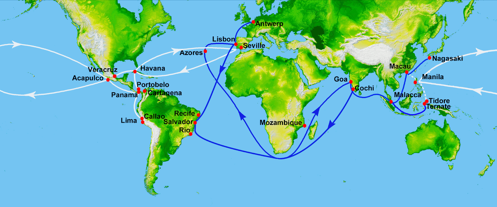
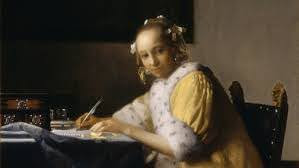
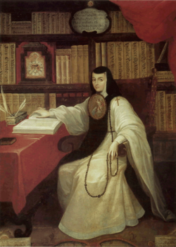
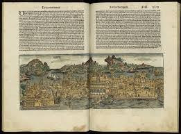
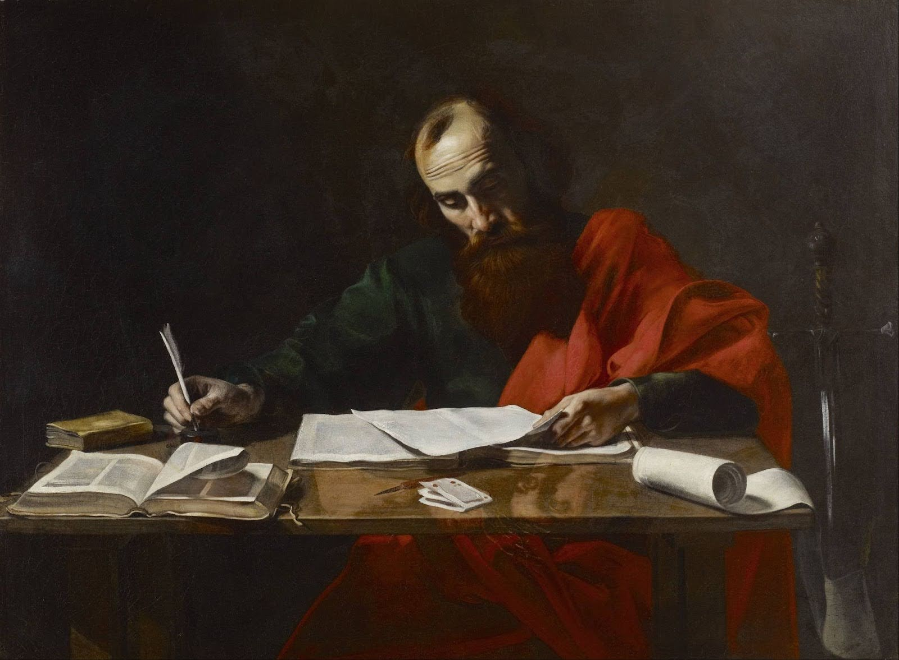
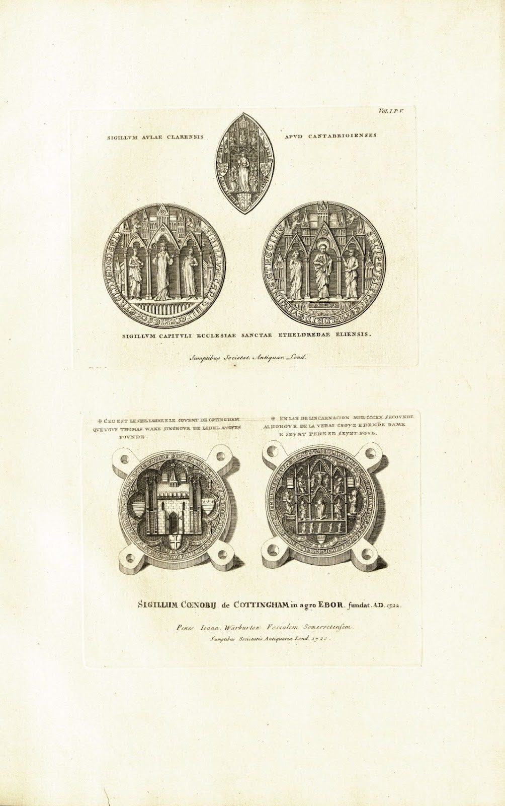

Component III
Image Program

The Spanish Golden Age had Mexico City, Spain, and Asia all connected through trade, politics, and culture, and La Respuesta was written right in the middle of all that. A letter moving through a network like this was never going to stay between two people, and Sor Juana almost certainly knew that when she put pen to paper. What this map really shows is that there was always going to be an audience beyond the Bishop, because the world she was writing in made that basically unavoidable.

This image creates contrast between how a typical letter in the 17th century is delivered and the lengthiness of Sor Juana's letter. A typical letter from the 17th century would be short and concise, however Sor Juana's 60 page letter is structurally excessive. Her letter is more of a document disguised as a letter. The scale of her document is covered by its form, and is meant to outgrow its stated audience.

This iconic portrait of Sor Juana Inés de la Cruz shows her humility and intelligence. What is interesting about this portrait is how much it mirrors what she does in the text. On the surface she is sitting quietly, dressed in her habit, holding her rosary. But the books stacked behind her and the papers in front of her tell a different story about who she actually is. She is performing the expected image of a modest nun while the entire composition signals something else. The tension between the surface and what is underneath it is exactly what the opening pages of La Respuesta are doing.

The physical durability of a printed book is part of the argument here. Sor Juana was writing in a world where manuscripts circulated but could also disappear, be confiscated, or be silenced, and the history of women's writing is full of examples of exactly that happening. Sappho's poems survived antiquity only in fragments, most of them lost to fires and the general indifference of institutions that did not think her work worth preserving. Sor Juana knew what happened to writing that did not find a durable form. The fact that La Respuesta survived and eventually made it into print is not separate from what she was trying to do. The future reader she was writing toward only exists because the text found a way to persist, and this image is a reminder of how fragile that persistence actually was.

Sor Juana brings up Saint Paul's line about women keeping silent in church, but she does not just drop it and move on. She actually works through it, unpacks it, and explains what it means in her specific situation. This is honestly the most revealing thing she does in the whole passage, because the Bishop did not need any of that explanation. He knew Paul just as well as she did. The only reason to walk someone through a citation they already know is if you are also talking to someone who does not, which is exactly what she was doing.

An ecclesiastical seal is meant to close something off. The Bishop wrote to a nun, the nun was supposed to respond with appropriate humility, and that was supposed to be the end of it. Sor Juana writing sixty pages that then circulated across New Spain was not what that seal was designed to contain. She took an exchange that was meant to stay between two people inside an institution and turned it into something that outlasted both of them.